文字
背景
行間


SGH活動報告
オーストラリア海外研修第２日
ナンボークリスチャンカレッジへの登校初日です。午前は敷地内を案内してもらい、キャッシー先生から、ホストファミリーと会話するために必要なフレーズを教わりました。途中でモーニングティータイム、業間休みのような「おやつタイム」をバディーの子たちと過ごしました。午後はバディーのクラスに混ぜてもらって参加しました。


 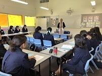
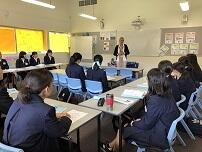
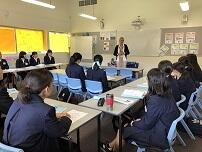 オーストラリア海外研修第１日
７月２１日（日）予定どおりブリスベン空港に到着しました。まずはフィールドワークの開始し、マウントクーサ展望台などを訪れました。ナンボークリスチャンカレッジへ移動後、無事に各自のホストファミリーと合流し、各家庭へと向かいました。

オーストラリア海外研修出発
７月２０日（土）期待と不安を胸に、生徒２０名が笑顔でオーストラリア海外研修に出発しました。成田国際空港（株）にご勤務の鹿山会福田様、江邨様もお見送りに来てくださり、激励してくださいました。準備は万全です。生徒代表からは力強い決意が述べられました。


第１回SGH運営指導協議会
投稿日時 : 2019/07/12
 sakura-h
sakura-h
 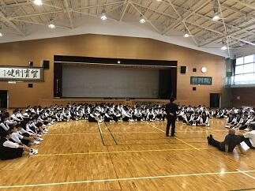
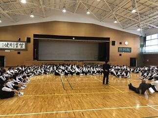 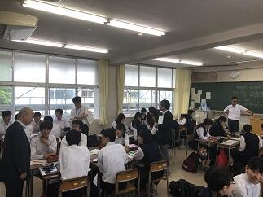
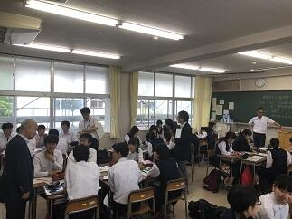

 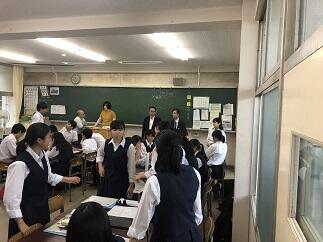
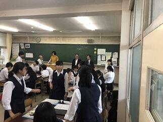 本日は、令和元年度第１回SGH運営指導協議会が行われました。会議の前に３限目に行われた１年生の総合的な探究の時間で本校の生徒が活用を進めているGoogle の G Suite for Education を含めたICT活用の全体講義の様子を参観していただき、４限目には２年生が夏休み中の探究活動の進め方等についてグループで協議している様子を参観していただきました。４限目については多くのグループがテーマや進め方について運営指導員の先生方から貴重なアドバイスをいただきました。その後、運営指導協議会においては４年目に入った本校のSGH事業の進め方について大変多くのアドバイスやご示唆をいただき大変有意義な会議でした。
本日は、令和元年度第１回SGH運営指導協議会が行われました。会議の前に３限目に行われた１年生の総合的な探究の時間で本校の生徒が活用を進めているGoogle の G Suite for Education を含めたICT活用の全体講義の様子を参観していただき、４限目には２年生が夏休み中の探究活動の進め方等についてグループで協議している様子を参観していただきました。４限目については多くのグループがテーマや進め方について運営指導員の先生方から貴重なアドバイスをいただきました。その後、運営指導協議会においては４年目に入った本校のSGH事業の進め方について大変多くのアドバイスやご示唆をいただき大変有意義な会議でした。 千葉大学環境活動ミーティング参加
投稿日時 : 2019/07/10
 探究担当
探究担当
7月10日（火）、千葉大学がおこなう環境活動ミーティングに、2年生2名が参加しました。本校生徒は、SGH課題研究でリユース食器と生ゴミ軽量化に取り組むグループの代表です。千葉大学が取り組んでいる環境活動の報告書をもとに、若い世代や一般市民へのアピール方法などについて意見交換をしました。

「学びマップ」と調査方法
投稿日時 : 2019/05/14
探究担当
1学年の探究の時間は4週目に入りました。6限目には校長から、自分の学びをメタ認知し、振り返ることを通して学び続ける重要性や、学びやテクノロジーを段階化し、それらにそって研究を発展させていく「学びマップ」の紹介がありました。今後課題研究に臨むにあたって必要な姿勢・態度について考えさせられる内容でした。7限目には、フィールドワークやアンケート調査のやり方についての話がありました。自分が決めた研究テーマにふさわしい調査方法を考える良いきっかけになったのではないでしょうか。
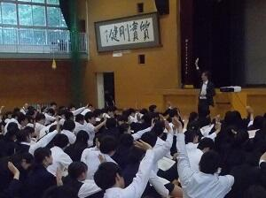 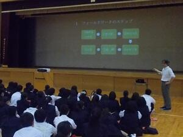
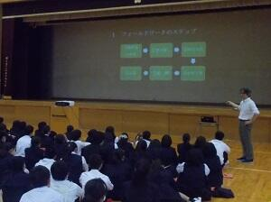
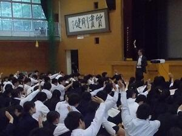
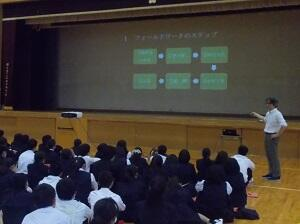 ドイツ・イギリス派遣報告会
5月7日(火)、１･２年生を対象に、ドイツ・イギリス海外派遣報告会が行われました。両研修とも本年3月に実施され、ドイツには11名、イギリスには12名の現3年生が参加しました。報告会では、現地で行った課題研究発表の内容、両国の歴史・伝統・文化、学生間の交流から学んだ課題等が報告されました。


 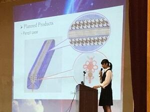
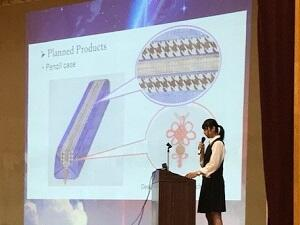
SDGs探究
投稿日時 : 2019/04/23
探究担当
2週目の「総合的な探究」の時間では、1学年は国連が掲げるSDGs(持続可能な開発目標)を通して、国際社会が抱える諸課題について4人1組で、話し合い活動を行いました。今後の研究テーマ設定に繋がる活発な意見交換がなされました。
2学年は、具体的な研究テーマを決定中です。5月からは調査を開始します。
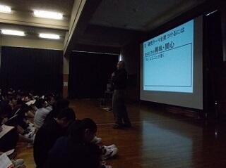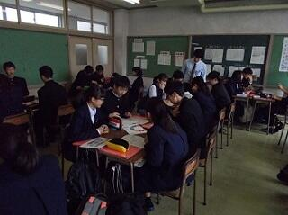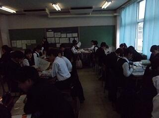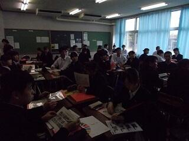
2学年は、具体的な研究テーマを決定中です。5月からは調査を開始します。
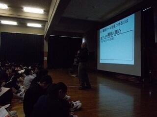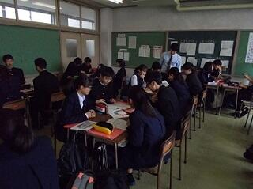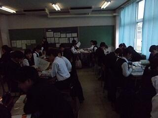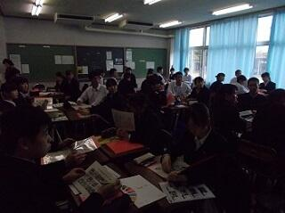
1学年 「総合的な探究」スタート
投稿日時 : 2019/04/17
探究担当
4月16日(火)6,7限、1年生対象に「総合的な探究」のガイダンスが開催されました。ガイダンスの中では、4人1組で研究を重ね、年度内にポスターを作成することが確認され、そのために必要な力について説明されました。後半には、「電車内ではどのように荷物を持つべきか」、「宇宙開発とガンの治療薬開発のどちらに資金を投入すべきか」など答えのない問いを生徒同士で話し合い、発表しました。これから始まる探究に向け、良い思考トレーニングになったのではないでしょうか。
2年生はグループでテーマを再設定し、探求を開始しました。3年生は論文作成が始まりました。
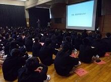


2年生はグループでテーマを再設定し、探求を開始しました。3年生は論文作成が始まりました。
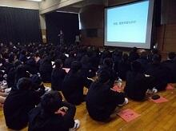
SGH甲子園2019
平成３１年３月２３日（土）関西学院大学上野ヶ原キャンパスで行われたSGH甲子園2019に２年生６名が参加し、英語で課題研究のポスタープレゼンテーションを行いました。午前９時から準備を始めリハーサルを行いました。午前１０時の開会式を経て、午前１１時２０分からプレゼンテーションを４回行いました。発表テーマは「SAKURA NOHAKU Bringing more people to sakura through "Nohaku"]です。内容は、近年の外国人観光客の増加と宿泊場所の課題、外国人観光客からの聞き取り調査、農泊の現状、県内で農泊を行っている農家を訪問して行ったフィールドワークから見える利点と課題、課題を解決するための具体的な方策、佐倉市で行う利点、外国人観光客向け広報の方法、佐倉市への提案等について発表しました。発表時間は１回につき５分ですが、研究内容を整理し明確に英語で説明することができました。午後３時から行われた高校生交流会では、全国の高校生とたくさん情報交換ができました。
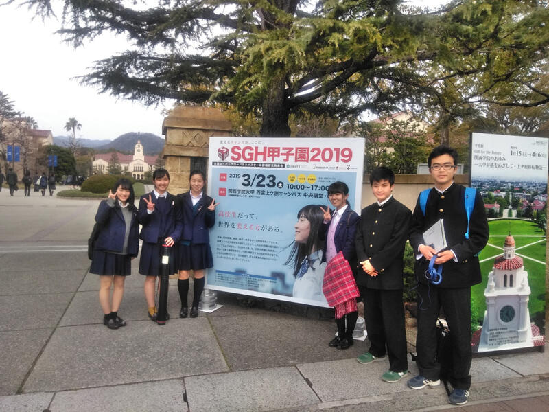


 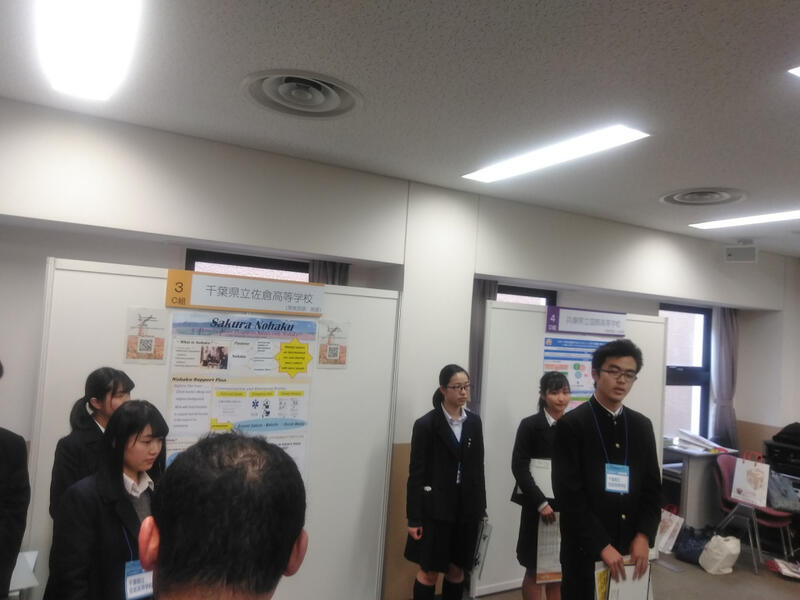
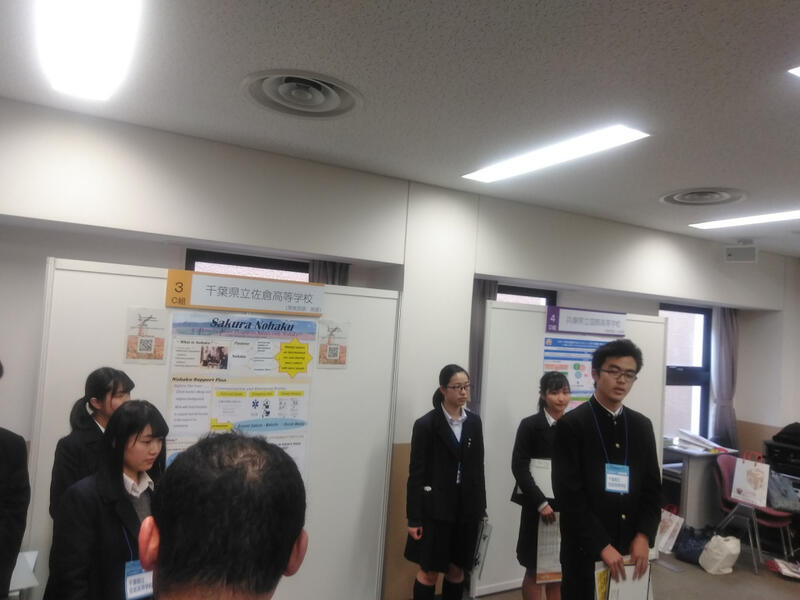
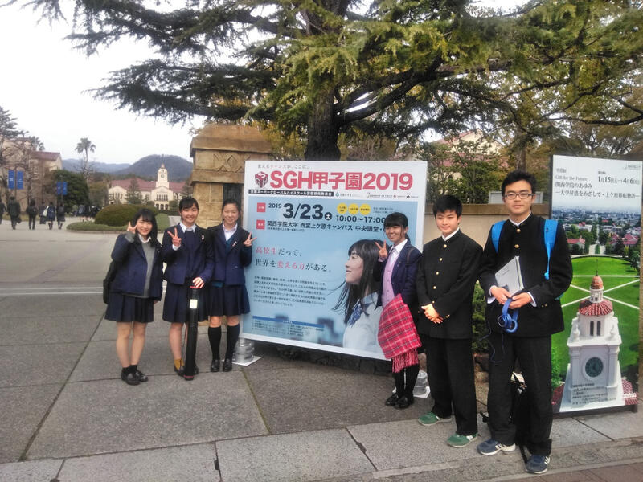
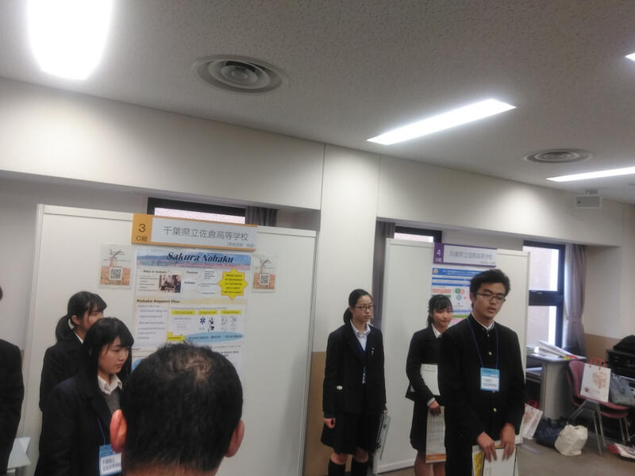 SSH・SGH 合同課題研究発表会
平成３１年３月１８日（月）SSH ・SGH 合同課題研究発表会が行なわれました。
SGH対象生徒は、本校体育館において、２年生２グループが全校生徒の前でプレゼンテーションソフトを用いた口頭発表を行ないました。発表言語は英語、テーマは「ナガエツルノゲイトウ駆除大作戦」「Peanuts Revolution」でした。
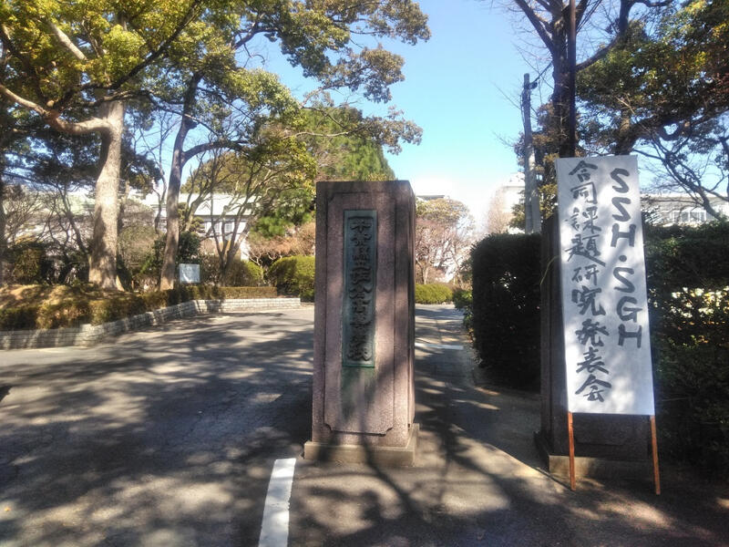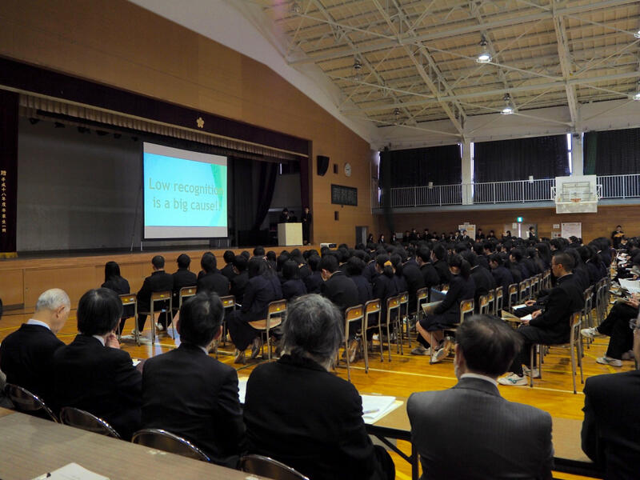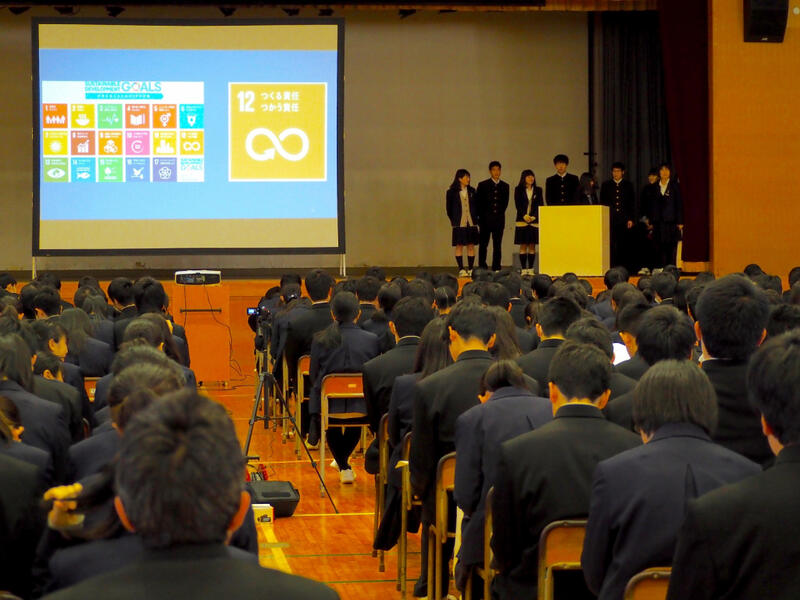
その後10時50分から11時40分まで多目的室１、２、化学講義室、生物講義室、第二体育館、地域交流施設に分かれ、各部屋２グループ（全１２グループ）が英語又は日本語で口頭発表を行ないました。
11時50分から12時30分まで、地域交流施設で担当教員がSGH事業における研究開発について御来校いただいた皆様に説明しました。
午後からは１年生２グループが地域交流施設で発表しました。

 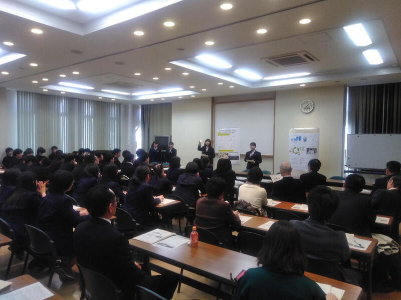
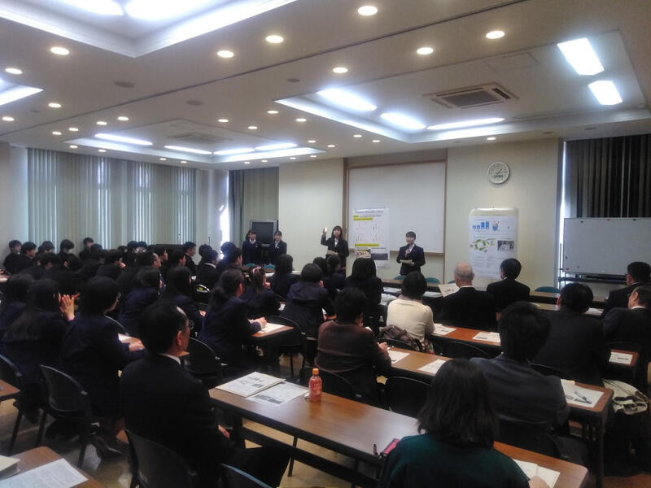
14時15分から15時30分まで第３回運営指導協議会が開かれ、生徒の研究の質の向上や発表が上達したことについて評価をいただくとともに、テーマを選んだプロセスがわかるとよい、問われたことから考えを深めるとよい、３年生には受験があるので課題研究を進める上で課題であろう、研究対象の地域は生徒の通学範囲から考えると佐倉からもう少し広げるとよい等の助言をいただきました。
SGH対象生徒は、本校体育館において、２年生２グループが全校生徒の前でプレゼンテーションソフトを用いた口頭発表を行ないました。発表言語は英語、テーマは「ナガエツルノゲイトウ駆除大作戦」「Peanuts Revolution」でした。
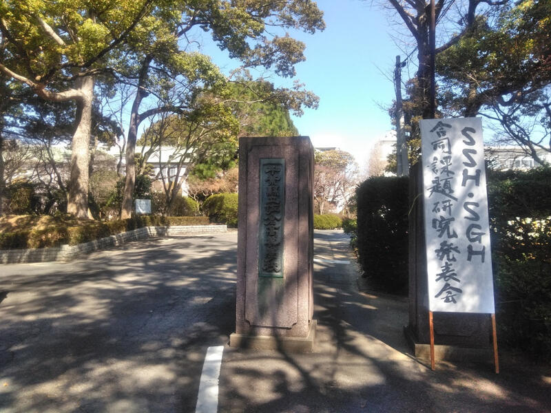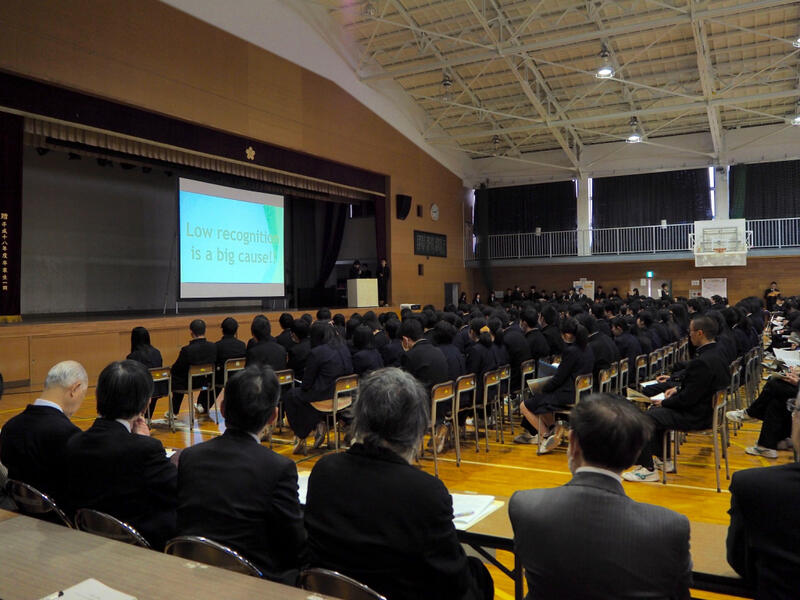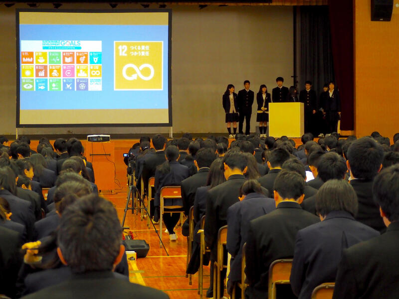
その後10時50分から11時40分まで多目的室１、２、化学講義室、生物講義室、第二体育館、地域交流施設に分かれ、各部屋２グループ（全１２グループ）が英語又は日本語で口頭発表を行ないました。
11時50分から12時30分まで、地域交流施設で担当教員がSGH事業における研究開発について御来校いただいた皆様に説明しました。
午後からは１年生２グループが地域交流施設で発表しました。
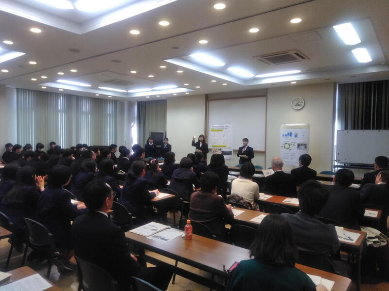14時15分から15時30分まで第３回運営指導協議会が開かれ、生徒の研究の質の向上や発表が上達したことについて評価をいただくとともに、テーマを選んだプロセスがわかるとよい、問われたことから考えを深めるとよい、３年生には受験があるので課題研究を進める上で課題であろう、研究対象の地域は生徒の通学範囲から考えると佐倉からもう少し広げるとよい等の助言をいただきました。
SGH校内課題研究発表会
２月１９日(火) ５・６・７限に、１・２年生普通科全クラスで課題研究発表会を行いました。２年生は、グループごとに研究を進めてきた内容についてプレゼンテーションソフトを用いながら英語又は日本語で発表を行ないました。１年生は、これから行なう研究についてポスターを用いながら全グループが英語で発表を行ないました。メロス言語学院の学生の皆様が１・２年の各教室で発表を聞いてくださり、研究内容についての質問や助言、英語の発音や発表方法等についての助言をしてくださいました。また、千葉大学の先生をお招きし、研究内容や発表等について御指導いただきました。
３月には、SSH・SGH課題研究合同発表会があります。
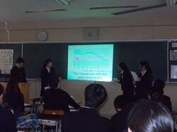


３月には、SSH・SGH課題研究合同発表会があります。
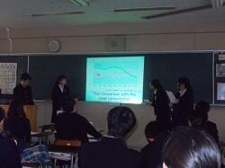
SGH課題研究発表会に向けて2
投稿日時 : 2019/01/29
sakura-h
平成３１年１月２９日（火）６・７限に、２月１９日に実施するSGH課題研究発表会に向け準備を行いました。２年生は、生徒同士で互いに発表側と聞き手側に分かれ、発表のリハーサルを行いました（写真左・中央）。聞き手側の生徒は、発表内容について質問するとともに、発表の良い点、改善点等をふせんに書いて発表者に渡しました。その後、各グループで発表の改善に向けて話し合い、発表練習を行いました。１年生は英語での発表に向けて、英語のポスターを作成し、発表の練習をしました（写真右）。


SGH海外研修（ドイツ派遣）事前研修 特別講義
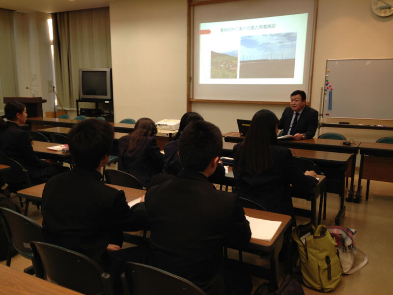 平成３１年１月１１日（金）午後３時４０分から本校地域交流施設でドイツ海外研修に参加する生徒を対象に、本校同窓会（鹿山会）副会長の寒郡氏に「佐倉高校生デュッセルドルフ市訪問に向けて」という演題で特別講義をしていただきました。ドイツ人の気質や文化、街の様子、千葉県とデュッセルドルフ市の関係など、様々なお話を伺うことができました。ビジネスでドイツ、特にデュッセルドルフ市に何度も訪れたご経験に基づくお話でしたので、これからデュッセルドルフを訪問する生徒にとっては大変参考になりました。また、講義のあとにドイツに関することだけでなく、生徒の課題研究に関する質問等にも答えていただきました。
SGH課題研究発表会に向けて
平成３１年１月８日（火）６・７限を利用して２月に実施するＳＧＨ課題研究発表会に向け準備を行ないました。
１年生は、発表会では研究のテーマや研究概要等についてポスターを用いて英語で発表します。今日は日本語でポスターを作成し、発表内容を固める作業を行ないました（写真右 話し合いながらポスターを作成している様子）。
２年生は、発表会では研究成果についてプレゼンテーションソフト又はポスターを用いて発表します。今日は研究の内容を整理し、他者にわかりやすく伝えるための準備を行ないました（写真左・中 発表の内容について話し合っている様子）。


１年生は、発表会では研究のテーマや研究概要等についてポスターを用いて英語で発表します。今日は日本語でポスターを作成し、発表内容を固める作業を行ないました（写真右 話し合いながらポスターを作成している様子）。
２年生は、発表会では研究成果についてプレゼンテーションソフト又はポスターを用いて発表します。今日は研究の内容を整理し、他者にわかりやすく伝えるための準備を行ないました（写真左・中 発表の内容について話し合っている様子）。
オランダ派遣報告会
 平成３０年１２月２１日（金）正午からオランダ派遣の報告会を行ないました。１１月14日から２５日までの間に実施したオランダ派遣に参加した１年生５人が、現地での活動について報告しました。内容は、ライデン大学学生との交流や意見交換について、シーボルトハウス、博物館、アンネフランクの家での調査について、ドラードカレッジでの活動やディスカッションについて、現地で実施した課題研究に係る調査の結果についてなどです。特に課題研究に係る調査結果については、「スマートアグリ」「食品ロス」「動物殺処分」について、それぞれオランダで実施した意識調査、実態調査等の結果を分析し、日本と比較しながら考察した内容でした。また、オランダでたくさんの人と交流できたことやフィールドワークの大切さを実感したことなどが報告されました。
平成３０年１２月２１日（金）正午からオランダ派遣の報告会を行ないました。１１月14日から２５日までの間に実施したオランダ派遣に参加した１年生５人が、現地での活動について報告しました。内容は、ライデン大学学生との交流や意見交換について、シーボルトハウス、博物館、アンネフランクの家での調査について、ドラードカレッジでの活動やディスカッションについて、現地で実施した課題研究に係る調査の結果についてなどです。特に課題研究に係る調査結果については、「スマートアグリ」「食品ロス」「動物殺処分」について、それぞれオランダで実施した意識調査、実態調査等の結果を分析し、日本と比較しながら考察した内容でした。また、オランダでたくさんの人と交流できたことやフィールドワークの大切さを実感したことなどが報告されました。 SGH全国高校生フォーラム
 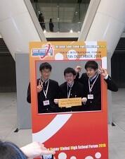平成３０年１２月１５日（土）スーパーグローバルハイスクール全国高校生フォーラムが東京国際フォーラムで行われました。本校からは２年G組髙橋玲くん、鹿嶋爽平くん、泉恭太くんの3名が参加しました。午前はテーマ別分科会に参加し「水・環境・エネルギー・気候変動」に係る課題や解決に向けた取組などについて、他校生徒と英語でディスカッションを行いました。泉くんは「英語力だけでなく、幅広い知識を身に付けないと深い議論ができない」と参加した感想をもらしていました。午後は「印旛沼の生態系保護」をテーマにした研究についてポスターセッションを英語で行いました。発表、質問に対する応答とも的確に行うことができました。１２月２３日に立教大学で行われるＳＧＨ課題研究発表会には、４チームが参加します。
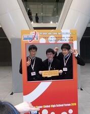平成３０年１２月１５日（土）スーパーグローバルハイスクール全国高校生フォーラムが東京国際フォーラムで行われました。本校からは２年G組髙橋玲くん、鹿嶋爽平くん、泉恭太くんの3名が参加しました。午前はテーマ別分科会に参加し「水・環境・エネルギー・気候変動」に係る課題や解決に向けた取組などについて、他校生徒と英語でディスカッションを行いました。泉くんは「英語力だけでなく、幅広い知識を身に付けないと深い議論ができない」と参加した感想をもらしていました。午後は「印旛沼の生態系保護」をテーマにした研究についてポスターセッションを英語で行いました。発表、質問に対する応答とも的確に行うことができました。１２月２３日に立教大学で行われるＳＧＨ課題研究発表会には、４チームが参加します。プレゼンテーションに向けて
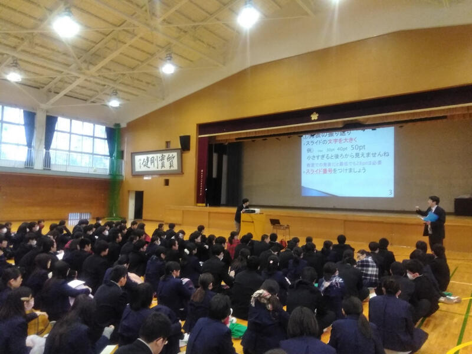平成３０年１２月１１日（火）６・７限第２学年の「GL探究」の時間は、課題研究の発表に向けた取組を行ないました。６限は体育館で、プレゼンテーションソフトを利用した発表の留意点、グラフ等の示し方、引用等の表現方法、今後のスケジュール等を確認しました。その後各教室に戻り、研究グループごとに研究のまとめと発表準備に取りかかりました。
マレーシアの高校との交流（SGH）
投稿日時 : 2018/12/11
sakura-h
カテゴリ:英語によるコミュニケーション
平成３０年１２月１０日（月）午前１１時～午後４時４０分、本校地域交流施設においてマレーシアの高校 KOLEJ ISLAM SULTAN ALAM SHAH の生徒３５名、同校教員３名と本校２年生国際交流委員４名、本校１年G組生徒４１名、２年G組生徒４１名が交流しました。
１ 学校紹介・展示室・記念館案内
本校国際交流委員（２年生）が学校紹介を英語で行なったあと、マレーシアの高校生４グループに委員が一人ずつ付き、展示室や記念館の説明を行ないました。マレーシアの高校生からの質問に対しても的確に回答していました。


２ GLコミュニケーション英語（１年F組）
日本の伝統文化をテーマに、英語で、折り紙、書道、紙相撲、よさこいソーランについて説明し、マレーシアの高校生に体験してもらいました。英語によるコミュニケーションも円滑に行なうことができました。


３ GLコミュニケーション英語（２年G組）
日本の文化とマレーシアの文化の相違についてディスカッションを行ないました。自分の意見を積極的に話すとともに、相互に理解を深めることができました。その後マレーシアの生徒がマレーシアのゲームやアラビア文字について英語で説明し、本校生徒はゲームの体験をしたりアラビア文字で自分の名前を書く体験をしました。
 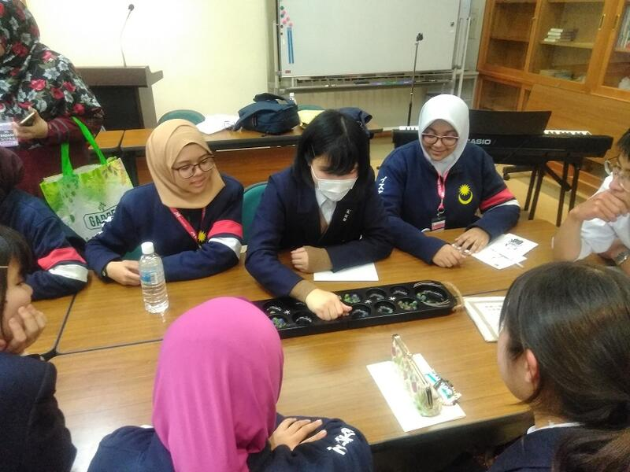
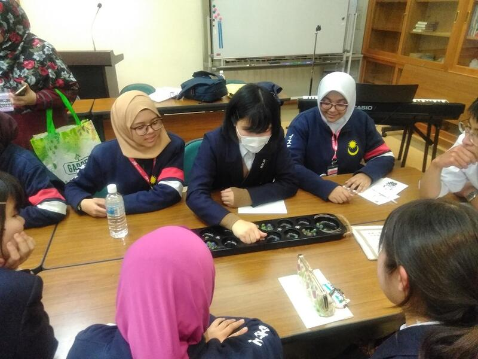
４ 交流会
マレーシアの高校紹介のあと、マレーシアの高校生と本校生徒がパフォーマンスを行ないました。英語でのやりとりは頻繁になり相互の理解は一層深まりました。
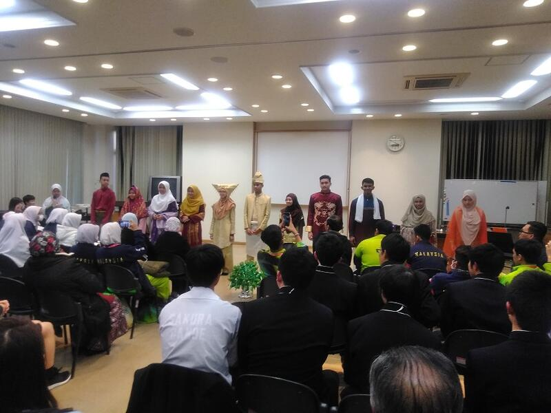
交流を通してマレーシアの高校生との親睦が深まりました。本校生徒にとっては今まで学習してきた英語力を主体的に確認できる場となるとともに、他国の文化や価値観を理解する良い機会にもなりました。
１ 学校紹介・展示室・記念館案内
本校国際交流委員（２年生）が学校紹介を英語で行なったあと、マレーシアの高校生４グループに委員が一人ずつ付き、展示室や記念館の説明を行ないました。マレーシアの高校生からの質問に対しても的確に回答していました。
２ GLコミュニケーション英語（１年F組）
日本の伝統文化をテーマに、英語で、折り紙、書道、紙相撲、よさこいソーランについて説明し、マレーシアの高校生に体験してもらいました。英語によるコミュニケーションも円滑に行なうことができました。
３ GLコミュニケーション英語（２年G組）
日本の文化とマレーシアの文化の相違についてディスカッションを行ないました。自分の意見を積極的に話すとともに、相互に理解を深めることができました。その後マレーシアの生徒がマレーシアのゲームやアラビア文字について英語で説明し、本校生徒はゲームの体験をしたりアラビア文字で自分の名前を書く体験をしました。
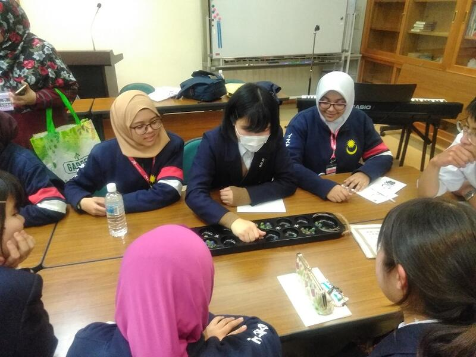４ 交流会
マレーシアの高校紹介のあと、マレーシアの高校生と本校生徒がパフォーマンスを行ないました。英語でのやりとりは頻繁になり相互の理解は一層深まりました。
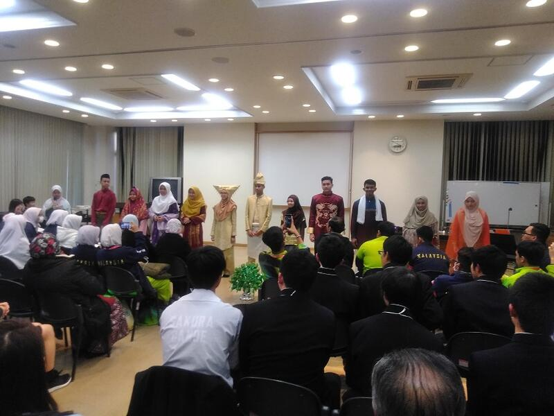
交流を通してマレーシアの高校生との親睦が深まりました。本校生徒にとっては今まで学習してきた英語力を主体的に確認できる場となるとともに、他国の文化や価値観を理解する良い機会にもなりました。
SGH課題研究「進捗状況発表会」
平成３０年１１月２７日（火）６限・７限において、第２学年生徒が各教室で課題研究の進捗状況を発表しました。プレゼンテーションソフトを用いた発表、ポスターを用いた発表、口頭のみの発表等、発表方法は様々でしたが、これまでの研究についてグループごとに研究目的、調査（先行事例・先行研究・独自調査等）、分析、結論（提案）、今後の展望、参考文献等について伝えることができました。課題解決に向けて小学校と連携したり、佐倉市と連携したりするグループもありました。発表後にはクラス内で意見交換をしました。
また、１年生が課題研究を進める上で参考にするために、２年生の発表を見学しました（写真右）。


また、１年生が課題研究を進める上で参考にするために、２年生の発表を見学しました（写真右）。